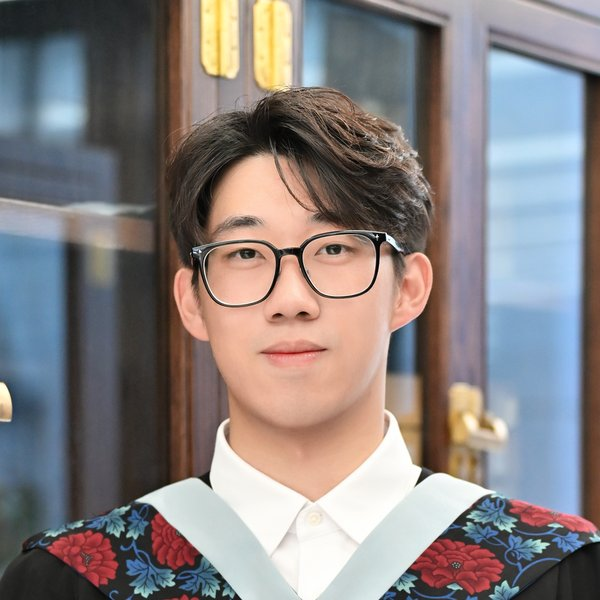

Jingyang Chen
Ph.D. Student, Department of Chemistry
Columbia University
About
I am a Ph.D. student in the Department of Chemistry at Columbia University, advised by Prof. Wei Min.
I received my B.S. in Chemistry from Peking University in 2026, where I worked on ultrafast spectroscopy of organic dyes and ultrafast optical instrumentation with Prof. Junrong Zheng.
Outside the lab, I enjoy soccer, fitness training, and tennis, often with a curiosity about the exercise physiology behind them.
Research Interests
I am interested in combining stimulated Raman scattering (SRS) microscopy with machine learning, in particular cross-modal prediction and generation: inferring the results of other physical-chemical experimental techniques from optical measurements. My long-term goal is an autonomous SRS imaging platform that interprets its own images and adjusts the optics and sample position without manual intervention, drawing on AI agents and ideas from embodied intelligence. More broadly, my interests include nonlinear optical techniques and the biophysical questions they can address.
Publications
-
Fluorescence Switching via Solvent-Induced State Inversion of 4-Formylindole
Qirui Yu⊥, Jingyang Chen⊥, Jianwei Zou, Shufan Xiao, Xinmao Li, Jianxin Guan, Zhihao Yu, and Junrong Zheng*
Submitted to The Journal of Physical Chemistry A, 2026.
⊥ Equal contribution · * Corresponding author
Teaching
- Fall 2026 – Spring 2027 Teaching Assistant, UN1507 Intensive General Chemistry Laboratory, Columbia University (with Prof. Luis Avila)
Awards
- 2026 Dean’s Fellowship, Graduate School of Arts and Sciences, Columbia University
- 2020 Silver Medal, Chinese Chemistry Olympiad, Chinese Chemical Society
Contact
jc6908@columbia.edu
Department of Chemistry, Columbia University, New York, NY